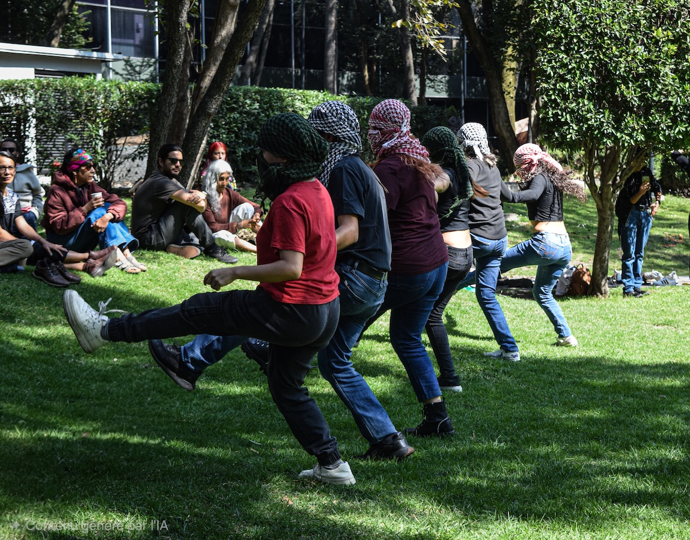
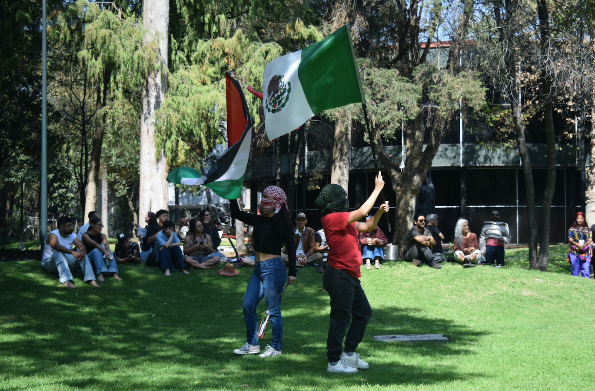
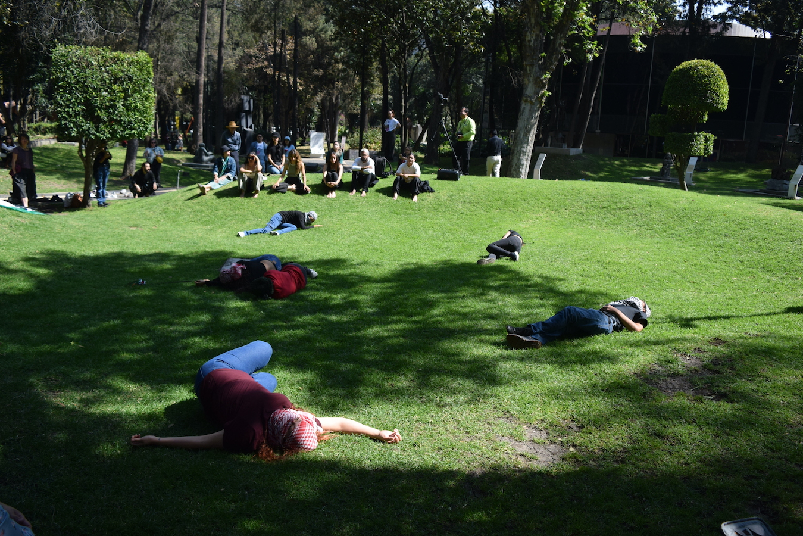
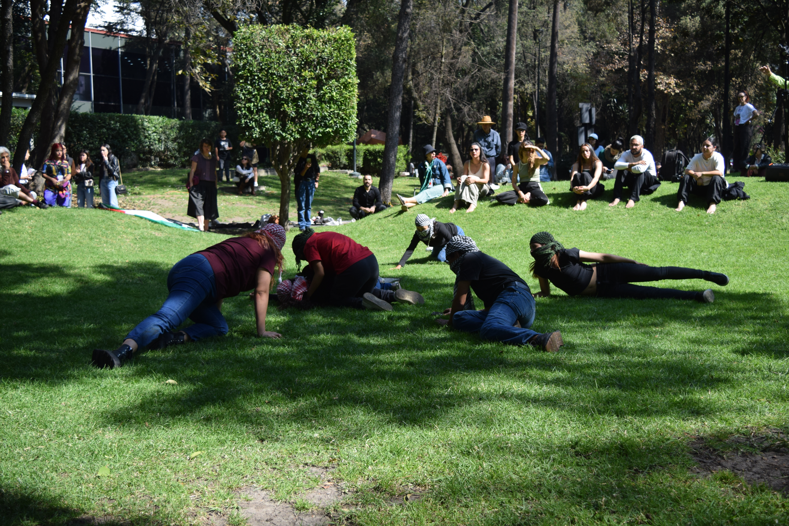
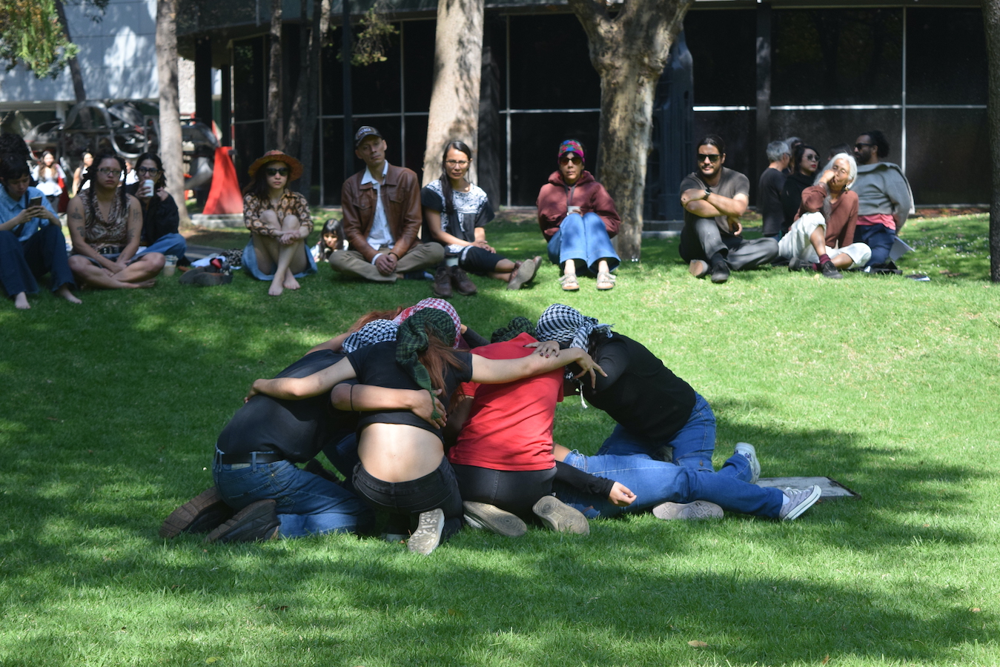
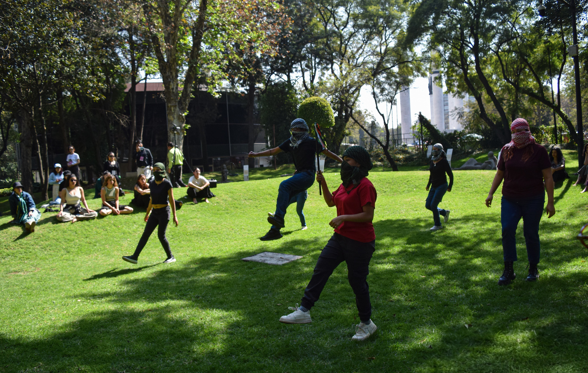
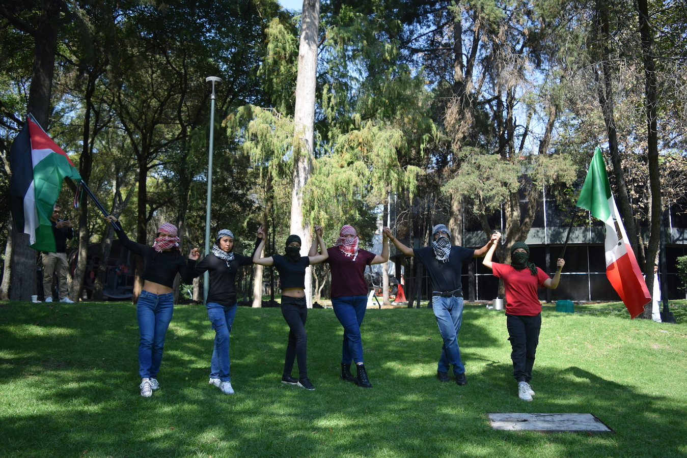
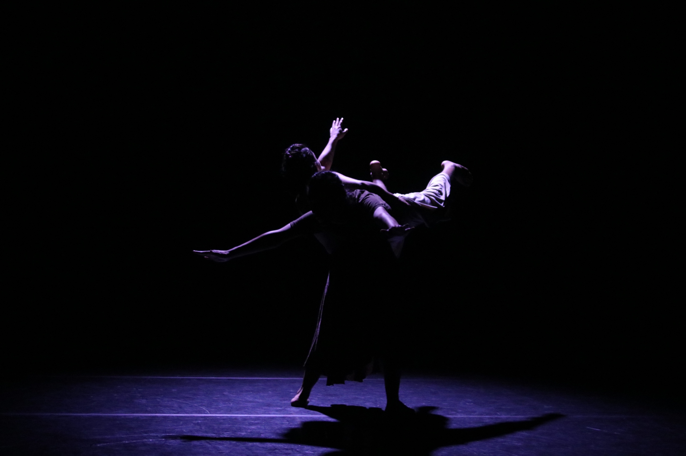
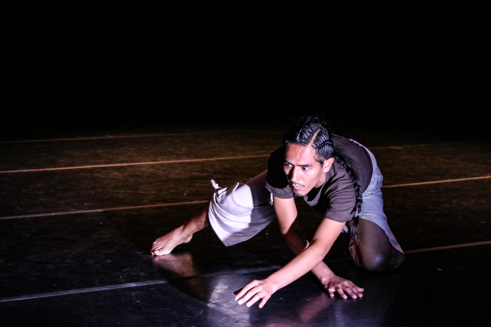

Bailar los tiempos de Tierra.

DABKE:
danza comunitaria que resiste la ocupación y el genocidio
dir. pazz
interpretes: Areli Anais Osornio López, Daniela Cancino Teja, Prisma Carolina Guillen Martínez, Sandra Paola Gaytán Jimenez, Amanda Desiree Ramirez Lopez y Pazz
10° encuentro nacional de danza MX
museo de arte moderno CDMX · 2025






bitácora digital — pulsa cada frase
El trabajo físico es lo que despatronaliza o repatroniza los a priori del cuerpo.
De piel, despegar la carne del hueso y moldear el hueso.
Ética al paso y al ritmo del mejor de los mundos flexibles.
La oreja coincide exactamente con la cresta iliaca.
El psoas conecta toda la zona lumbar y se entrena de manera indirecta.
Hacer sentir pensar.

Intérpretes Rooni - Pazz
Jardín Escénico 2026
Fotografía Fátima Ramírez Corona

Intérprete Pazz
Jardín Escénico 2026
Fotografía Fátima Ramírez Corona